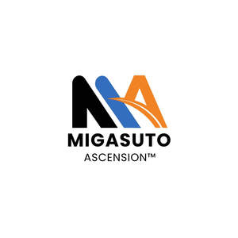

Trade Mark Journal No.2025/045 7 November 2025
UK00004271916 30 September 2025 (35,36)

- Class 35
- Business management consultancy; professional business consultancy; strategic business planning; business administration consultancy; business organisation consultancy. Business management assistance; advisory services for business management; provision of business information; business efficiency expert services. Business risk management services; business analysis, research and information services; business appraisals and assessments. Financial management consultancy for businesses [non-monetary]; commercial administration of the licensing of the goods and services of others; Business consultancy services relating to management of fund raising campaigns; Business consultancy services relating to the marketing of fund raising campaigns; Financial marketing; Business advice relating to growth financing.
- Class 36
- Corporate finance; Finance services; Project finance; Corporate finance consultancy; Corporate finance services; Arranging of finance; Raising of finance; Finance (Raising of -); Arranging finance for businesses; Provision of finance for business ventures; Consultations relating to corporate finance; Consultancy services relating to corporate finance; Consulting services relating to corporate finance; Advisory services relating to corporate finance; Advisory services relating to investment finance; Advisory services relating to investments and finance; Professional consultancy relating to finance; Consultancy services relating to finance; Corporate financing; Research services relating to finance; Advisory services relating to finance; Arranging finance for construction projects; Financing of investments; Equity financing; Financing services; Financial and investment consultancy services; Financial investment; Private equity fund investment services.
Migasuto Holdings Ltd